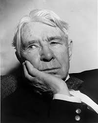

Шартсыз сүйіспеншілік идеясы көрініс тапқан тұлғалар

Мағжан Жұмабаев
Мағжан поэзиясында сүйіспеншілік — ұлттық рух пен адамзатқа деген сенім.

Уильям Шекспир
Шекспир махаббатты шартсыз, құрбандық пен адалдық арқылы бейнелейді.

Карл Сэндберг
Сэндберг шығармаларында адамзатқа деген гуманистік сүйіспеншілік көрінеді.